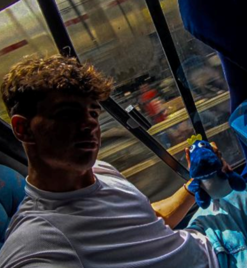
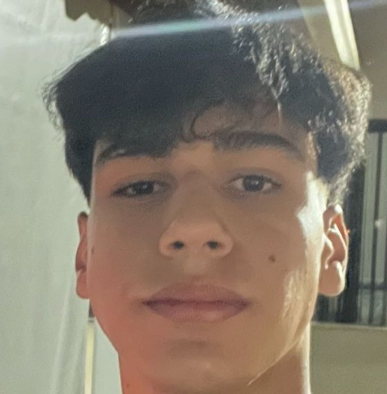
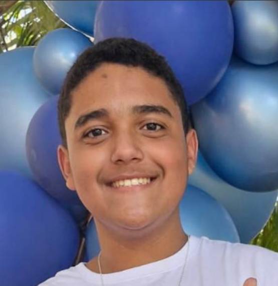

Nós somos a Lumnia, uma empresa fictícia criada durante as aulas de
laboratório de programação II, somos uma empresa de consultoria e
desenvolvimento de inteligência artificial. Lumnia é uma empresa
inovadora, dedicada a transformar o futuro dos negócios por meio da
inteligência artificial (IA) e da automação. Com uma visão clara de
revolucionar a maneira como as empresas operam e se conectam com seus
clientes, a Lumnia se posiciona como líder em soluções de IA que geram
valor real e mensurável para as organizações.
Luiz Felipe

Aluno do IFTM, responsável por liderar as iniciativas de pesquisa e
desenvolvimento, criando novas soluções e garantindo que a Lumnia esteja
na vanguarda das inovações tecnológicas.
Otávio Rabelo

Aluno do IFTM, supervisiona os códigos feitos, a fim de corrigir algum
erro que possa passar despercebido, além de garantir implementação de
novas funcionalidades e soluções.
Ryan Gabriel

Aluno do IFTM, Ryan é o líder da empresa, definindo as estratégias e a
visão da empresa, focando em soluções inovadoras de inteligência
artificial.
Samuel Assis
Aluno do IFTM, lidera o design e a experiência do usuário dos produtos
da Lumnia, garantindo que as soluções sejam não só funcionais, mas
também intuitivas e agradáveis para os usuários.
Considerações do grupo
Realizamos esse site como uma forma de poder passar um pouco de
conhecimento sobre o que é o laboratório de programação I, que assuntos
são abordados, o objetivo dessa matéria, matérias aprendidas e linguagens
estudadas. tivemos a oportunidade de aprofundar nossos conhecimentos e entender melhor sobre essa matéria.
Percebemos que para a criação, depende de uma combinação entre conhecimento técnico,
planejamento estratégico e foco na experiência do usuário.